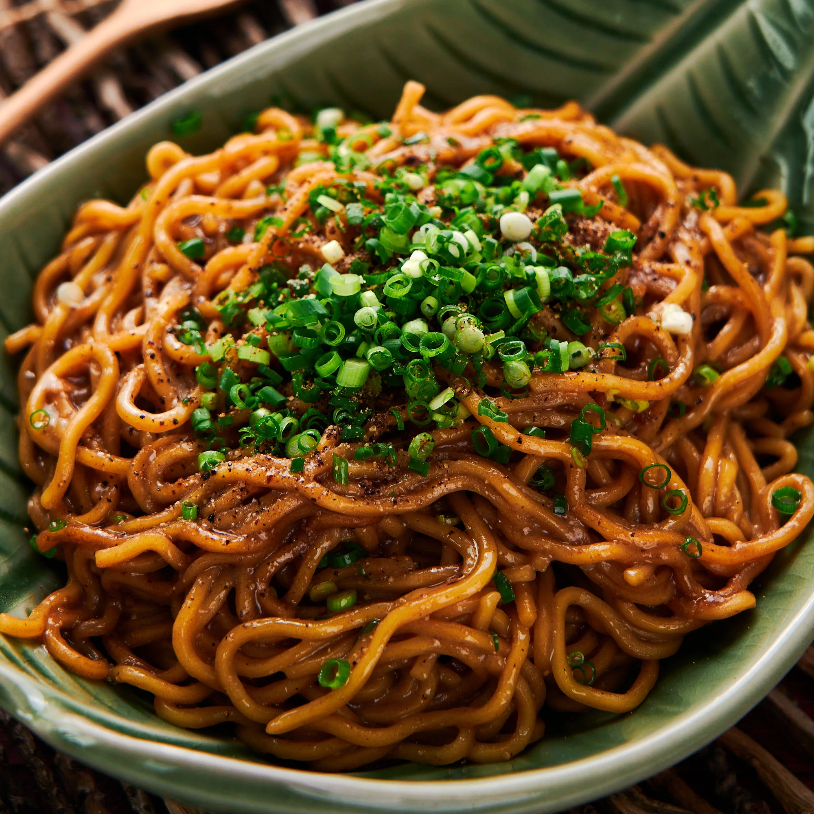

Garlic Noodles

Description
Garlic Noodles are sweet, rich, and savory with a strong garlic punch.
They make the perfect side dish to any Asian inspired meal.
Ingredeients
- Angel hair or Spaghetti Pasta
- 3 - 4 cloves of garlic
- 1/2 bunch of green onions
- 4 Tbsp Butter
- 2 tsp soy sauce
- 1 tsp fish sauce
- 2 Tbsp oyster sauce
Steps
- Add the oyster sauce, brown sugar, soy sauce and sesame oil to a bowl and stir until combined.
- Bring a large pot of water to a boil and cook the noodles according to the package directions (boil for 7-10 minutes).
Drain the cooked noodles in a colander, then set aside.
- While the pasta cooks, mince the garlic and slice the green onions.
Melt the butter in a large skillet over medium-low heat.
Once the butter is melted and bubbly, add the garlic and onions (save a few for garnish) and
sauté until they are soft and fragrant (1-2 minutes).
- Remove the skillet from the heat.
Add the drained pasta and oyster sauce mixture to the skillet, and stir well to coat the pasta.
If your pasta is stiff or sticky making it hard to stir, sprinkle a small amount of hot water over the pasta to loosen it up.
Garnish the pasta with any reserved sliced green onions, then serve.